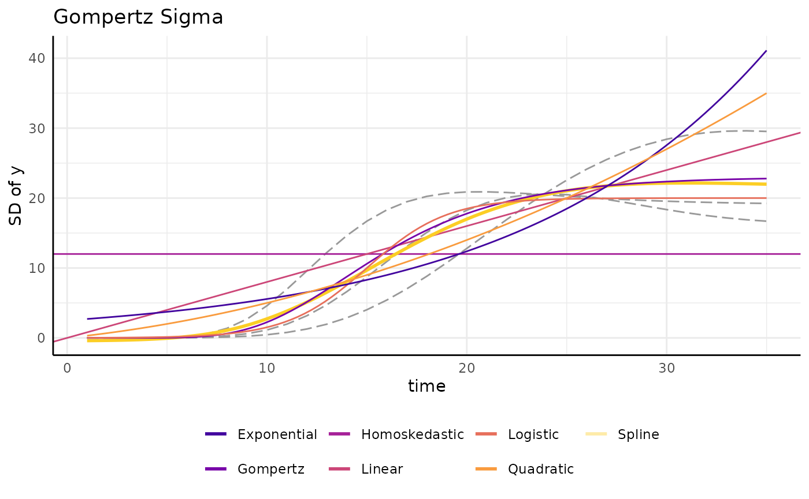
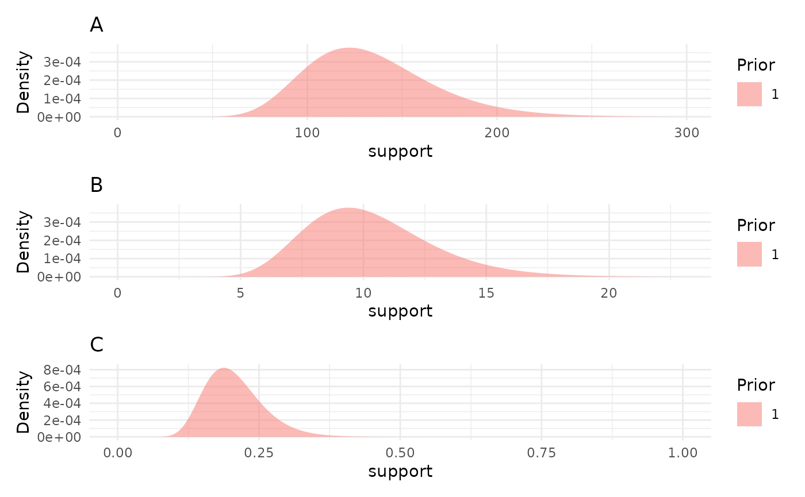
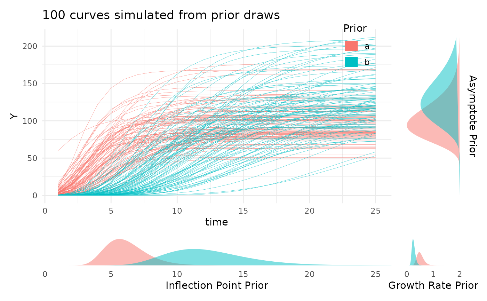
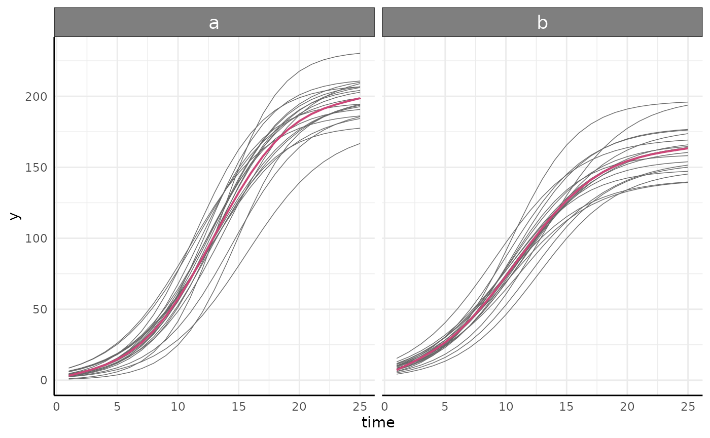

Longitudinal Growth Modeling Options
pcvr v0.1.0
Josh Sumner, DDPSC Data Science Core Facility
2023-10-27
Source:vignettes/longitudinal.Rmd
longitudinal.Rmd
library(pcvr)
library(data.table) # for fread
library(ggplot2)
library(patchwork) # for easy ggplot manipulation/combination
library(brms)Why Longitudinal Modeling?
Longitudinal modeling allows users to take full advantage of accurate and non-destructive data collection possible through high throughput image based phenotyping. Using longitudinal data accurately requires some understanding of the statistical challenges associated with it. Statistical complications including changes in variance (heteroskedasticity), non-linearity, and autocorrelation (plant’s day to day self similarity) present potential problems in analyses. To address this kind of data several functions are provided to make fitting appropriate growth models more straightforward.
Installation for Advanced Models
The brms package is not automatically imported by
pcvr, so before fitting brms models we need to
load that package. For details on installing brms and
either rstan or cmdstanr (with
cmdstanr being recommended), see the linked documentation.
Note that if you install pcvr from github with
dependencies=T then cmdstanr and
brms will be installed.
Once cmdstanr is installed we also need to set the
cmdstan path and link cmdstan to R, which is all done easily by
cmdstanr. For example, packages can be installed and
prepped using this code.
if (!"cmdstanr" %in% installed.packages()) {
install.packages("cmdstanr", repos = c("https://mc-stan.org/r-packages/", getOption("repos")))
}
if (!"brms" %in% installed.packages()) {
install.packages("brms")
}
library(brms)
library(cmdstanr)
cmdstanr::install_cmdstan()Available Growth Models
Based on literature and experience there are six common plant growth
models that make up the “main” models in growthSS, although
13 are supported. Those main six growth models are supported in
pcvr across each of four available backend functions
(nls, nlrq, nlme, and
brms). The mgcv backend can also be used to
fit generalized additive models (GAMS) to any of these growth curves as
well. In addition to these six main models GAMs, double logistic, and
double gompertz models are supported across the four available parameter
based backends. The parameterizations of these models are explained
below.
Logistic
The logistic function here is implemented as a 3 parameter sigmoidal growth curve:
In this model A is the asymptote, B is the inflection point, and C is the growth rate.
Gompertz
The gompertz function here is also a 3 parameter sigmoidal growth curve:
In this model A is the asymptote, B is the inflection point, and C is the growth rate.
The gompertz formula is more complex than the logistic formula, which tends to make the model slightly harder to fit in terms of time and computation. The benefit to that extra effort is that the gompertz curve is more flexible than the logistic curve and does not have to stop growing at the same rate as it initially started growing. In the author’s experience gompertz growth models have provided the best fit to sigmoidal data, but sometimes the speed and familiarity of the logistic function may be compelling.
Monomolecular
The monomolecular function here is a 2 parameter asymptotic growth curve:
Once again, A is the asymptote but now B is the growth rate.
This model has often fit well for height or width phenotypes, but you should make model choices based on your data/expectations.
Exponential
The exponential function here is a 2 parameter non-asymptotic growth curve bearing strong similarity to the monomolecular formula:
Here A is a scale parameter and B is the growth rate.
Most plants do not grow indefinitely, although many may grow
exponentially through the course of an experiment (think of the first
half of a logistic or gompertz curve). In those cases you may wish to
use an exponential model or if you are using the brms
backend then you may wish to rely on some prior information about an
asymptote that would eventually be achieved to use a sigmoidal
model.
Power Law
The power law function here is a 2 parameter non-asymptotic growth curve:
Here A is a scale parameter and B is the growth rate. The formula becomes linear when B is 1, shows slowing growth over time when 0 < B < 1 and shows growth speed increasing over time (the exponential) when B > 1.
These models can allow for slowing growth over time but without the expectation that growth ever truly stops.
Linear
The linear function here is simply:
Here A is the growth rate and the intercept is assumed to be 0.
Double Logistic
The double logistic function here is just two combined logistic functions:
Here the parameters have the same interpretation as those in the logistic curve, but for the first and second component separately.
This is intended for use with recover experiments, not for any data
with very minor hiccups in the overall trend. Additionally, with the
brms backend the segmented models allow for a more flexible
implementation as logistic+logistic, although in that
implementation the values for A and B are not relative.
Double Gompertz
The double logistic function here is just two combined gompertz functions:
Here the parameters have the same interpretation as those in the gompertz curve, but for the first and second component separately.
All the same points as with the double logistic curve apply here as well.
Weibull
The weibull growth curve is derived from the generalized extreme value distribution and is comparable to the gompertz growth model option, but may be slightly easier to fit/faster moving in some cases.
Gumbel
The gumbel growth curve is also derived from the generalized EVD and would be used in similar contexts as the weibull or gompertz model options. The choice of which to use is left to individual users and the conventions of your field.
Frechet
This is the final option derived from the generalized EVD. Note that here a 3 parameter version is used with the location (m) set to 0 by default.
Bragg
The Bragg model is a dose-response curve that models the minima and maxima using 3 parameters.
Lorentz
The Lorentz model is a dose-response curve that models the minima and maxima using 3 parameters. This parameterization may has a slightly more intuitive formula than Bragg for some people but has worse statistical qualities.
Beta
The Beta model is based on the PDF of the beta distribution and models minima/maxima as a dose-response curve using 5 parameters. This can be a difficult model to fit but can describe non-symmetric dose-response relationships well.
GAM
Finally, all backends can fit GAMs. These are unparameterized functions that use a series of splines to fit a variety of trends.
In general these are less useful since they do not give directly interpretable parameters, but their flexibility can be valuable if your data does not fit some more standard model well.
Simulating data
Data from any parameterized model can be simulated using
growthSim. Through this vignette we will use data created
in this way to show modeling options.
simdf <- growthSim("logistic", n = 20, t = 25, params = list(
"A" = c(200, 160),
"B" = c(13, 11),
"C" = c(3, 3.5)
))
l <- ggplot(simdf, aes(time, y, group = interaction(group, id))) +
geom_line(aes(color = group)) +
labs(title = "Logistic") +
theme_minimal() +
theme(legend.position = "none")
simdf <- growthSim("gompertz", n = 20, t = 25, params = list(
"A" = c(200, 160),
"B" = c(13, 11),
"C" = c(0.2, 0.25)
))
g <- ggplot(simdf, aes(time, y, group = interaction(group, id))) +
geom_line(aes(color = group)) +
labs(title = "Gompertz") +
theme_minimal() +
theme(legend.position = "none")
simdf <- growthSim("monomolecular", n = 20, t = 25, params = list("A" = c(200, 160), "B" = c(0.08, 0.1)))
m <- ggplot(simdf, aes(time, y, group = interaction(group, id))) +
geom_line(aes(color = group)) +
labs(title = "Monomolecular") +
theme_minimal() +
theme(legend.position = "none")
simdf <- growthSim("exponential", n = 20, t = 25, params = list("A" = c(15, 20), "B" = c(0.095, 0.095)))
e <- ggplot(simdf, aes(time, y, group = interaction(group, id))) +
geom_line(aes(color = group)) +
labs(title = "Exponential") +
theme_minimal() +
theme(legend.position = "none")
simdf <- growthSim("linear", n = 20, t = 25, params = list("A" = c(1.1, 0.95)))
ln <- ggplot(simdf, aes(time, y, group = interaction(group, id))) +
geom_line(aes(color = group)) +
labs(title = "Linear") +
theme_minimal() +
theme(legend.position = "none")
simdf <- growthSim("power law", n = 20, t = 25, params = list("A" = c(16, 11), "B" = c(0.75, 0.7)))
pl <- ggplot(simdf, aes(time, y, group = interaction(group, id))) +
geom_line(aes(color = group)) +
labs(title = "Power Law") +
theme_minimal() +
theme(legend.position = "none")
patch <- (l + g + m) / (e + ln + pl)
patchAvailable Model Backends
As previously mentioned there are five backends supported in
pcvr. Here we will go over those backends in more detail.
These backends are selected using one of nls, nlrq, nlme, mgcv, or brms
which correspond to the functions shown in this table.
| “nls” | “nlrq” | “nlme” | “mgcv” | “brms” |
|---|---|---|---|---|
stats::nls |
quantreg::nlrq |
nlme::nlme |
mgcv::gam |
brms::brms |
nls
The nls backend is the simplest option. These models
account for non-linearity using any of the aforementioned model types
and fit very quickly but do not have ways to take autocorrelation or
heteroskedasticity into account.
nlrq
The nlrq backend fits non-linear quantile models to
specified quantiles of the data. These models account for non-linearity
and account for heteroskedasticity in a non-parametric quantile based
way (fitting 2.5% and 97.5% models will provide something like a 95%
confidence interval that changes width across time as the data
does).
nlme
The nlme backend fits non-linear mixed effect models.
These models account for non-linearity, autocorrelation, and to have
options to model the heteroskedasticity.
mgcv
The mgcv backend only fits GAMs, which do account for
non-linearity but do not account for heteroskedasticity and
autocorrelation and do not return interpretable parameters.
brms
The brms backend fits hierarchical Bayesian models that
account for non-linearity, autocorrelation and heteroskedasticity. These
models are more flexible than any of the other options and are the focus
of the Advanced
Growth Modeling Tutorial.
Making models in pcvr
At a high level the relevant functions in pcvr are
growthSS, fitGrowth, growthPlot,
and testGrowth.
growthSSspecifies self starting growth models and returns a list that is used byfitGrowthfitGrowthfits a growth model specified bygrowthSSand returns a model or a list of model options.growthPlotvisualizes the model fit. This is particularly helpful withbrmsmodels to check their heteroskedastic sub models.testGrowthtests model parameters against nested versions of the same models to allow for straightforward hypothesis testing on frequentist (non-brms) models. Forbrmsmodels thebrms::hypothesisfunction should be used.
Using growthSS
growthSS is the first pcvr helper function
for setting up longitudinal models. growthSS will return a
list of elements used to fit a longitudinal model including a formula,
starting values (or priors for brms values), data to use,
and several elements used internally in other functions.
growthSS takes five arguments which specify the model to
use, a simplified formula specifying the columns of your data to use, a
sigma option, the data to use, and starting values/priors. The model and
data to use are relatively straightforward, compare a plot of your data
against the general shapes of the model parameterizations shown above to
pick a model type and pass your dataframe to the df
argument. The remaining arguments are explained below.
growthSS(..., form, ...)
The form argument of growthSS needs to
specify the outcome variable, the time variable, an identifier for
individuals, and the grouping structure. These are passed as a formula
object, using similar syntax to lme4 and brms,
such as outcome ~ time|individual_id/group_id. Verbally
this would be read as “outcome modeled by time accounting for
correlation between individual_id’s with fixed effects specified per
each group_id”. Note that this formula will not have to change for
different growth models, this is only to specify the structure of your
data. This simplification requires each of these parts of the formula
must be a single column in your dataframe. Note that for each group in
your data a set of parameters will be estimated. If you have lots of
groups in your data then it may make sense to fit models to only a few
groups at a time. If you do that then the models can still be compared
by extracting the MCMC draws, combining them into a dataframe, then
using brms::hypothesis per normal.
For model backends that do not account for autocorrelation the
individual will not be used and can be omitted leaving
outcome ~ time|group_id, but there is no harm in including
the individual_id component.
growthSS(..., sigma, ...)
The sigma argument controls distributional sub models.
This is only used with nlme and brms backends
which support different options.
In nlme models this models sigma and can be “int”,
“power”, or “exp” which correspond to using nlme::varIdent
(constant variance within groups), nlme::varPower (variance
changing by a power function), nlme::varExp (variance
changing by an exponential function).
In brms models this can be specified in the same way as
the general growth model and can be used to model any distributional
parameter in the model family you use. The default model family is
Student T, which has sigma and nu parameters. Other distributions can be
specified in the main growth model as
model = "family_name: model_name"
(model = "poisson: linear" as an example). For details on
available families see ?brms::brmsfamily. There is also an
“int” model type which fits a 0 slope intercept only model. While “int”
can be used in any brms model the option is meant to be
used specifying a homoskedastic sub model, or a period of noise before
the main growth trend begins (in terms of growth or variance).
Distributional parameters that are not specified will be modeled as
constant between groups.
At a high level we can think about any of these models as fitting a curve to these lines.
set.seed(345)
gomp <- growthSim("gompertz", n = 20, t = 35, params = list(
"A" = c(200, 180, 160),
"B" = c(20, 22, 18),
"C" = c(0.15, 0.2, 0.1)
))
sigma_df <- aggregate(y ~ group + time, data = gomp, FUN = sd)
ggplot(sigma_df, aes(x = time, y = y, group = group)) +
geom_line(color = "gray60") +
pcv_theme() +
labs(y = "SD of y", title = "Gompertz Sigma")
Several options are shown here, ignoring grouping here since the data is already aggregated.
draw_gomp_sigma <- function(x) {
return(23 * exp(-21 * exp(-0.22 * x)))
}
ggplot(sigma_df, aes(x = time, y = y)) +
geom_line(aes(group = group), color = "gray60") +
geom_hline(aes(yintercept = 12, color = "Homoskedastic"),
linetype = 5,
key_glyph = draw_key_path
) +
geom_abline(aes(slope = 0.8, intercept = 0, color = "Linear"),
linetype = 5,
key_glyph = draw_key_path
) +
geom_smooth(
method = "gam", aes(color = "Spline"), linetype = 5, se = FALSE,
key_glyph = draw_key_path
) +
geom_function(fun = draw_gomp_sigma, aes(color = "Gompertz"), linetype = 5) +
scale_color_viridis_d(option = "plasma", begin = 0.1, end = 0.9) +
guides(color = guide_legend(override.aes = list(linewidth = 1, linetype = 1))) +
pcv_theme() +
theme(legend.position = "bottom") +
labs(y = "SD of y", title = "Gompertz Sigma", color = "")“int” will specify a homoskedastic model, that is one with constant variance over time per each group. While this is the default for almost every kind of statistical modeling it is an unrealistic assumption in this setting where we often follow growth from small seedlings to potentially fully grown plants. Even if we start with larger plants the homoskedastic assumption almost never holds in longitudinal modeling. We can fit an example model and see the issue with the homoskedastic assumption through the model’s credible intervals, which are far too wide at the beginning of the experiment and even include some negative values for plant area.
ss <- growthSS(
model = "gompertz", form = y ~ time | id / group, sigma = "int",
df = gomp, start = list("A" = 130, "B" = 15, "C" = 0.25)
)
ss## gompertz brms student model:
##
## pcvr formula variables:
## Outcome: y
## X: time
## Individual: id
## Group: group
##
## Model Formula:
## y ~ A * exp(-B * exp(-C * time))
## autocor ~ tructure(list(), class = "formula", .Environment = <environment>)
## sigma ~ 0 + group
## nu ~ 1
## A ~ 0 + group
## B ~ 0 + group
## C ~ 0 + group
##
## Data:
## id group time y
## 1 id_1 a 1 9.650345e-06
## 2 id_1 a 2 9.639086e-05
## 3 id_1 a 3 7.020911e-04
## ...
## (2100 rows)
fit_h <- fitGrowth(ss, iter = 1000, cores = 4, chains = 4, silent = 0)
brmPlot(fit_h, form = ss$pcvrForm, df = ss$df)We can relax this assumption and model sigma separately from the main
growth trend. To show an example of the options in pcvr,
here we repeat the example from above using a linear submodel. Note that
here we add some extra controls to the model fitting algorithm to help
the model fit well with the added complexity at the cost of being
slower.
ss <- growthSS(
model = "gompertz", form = y ~ time | id / group, sigma = "linear",
df = gomp, start = list("A" = 130, "B" = 15, "C" = 0.25)
)
ss## gompertz brms student model:
##
## pcvr formula variables:
## Outcome: y
## X: time
## Individual: id
## Group: group
##
## Model Formula:
## y ~ A * exp(-B * exp(-C * time))
## autocor ~ tructure(list(), class = "formula", .Environment = <environment>)
## sigma ~ time + time:group
## nu ~ 1
## A ~ 0 + group
## B ~ 0 + group
## C ~ 0 + group
##
## Data:
## id group time y
## 1 id_1 a 1 9.650345e-06
## 2 id_1 a 2 9.639086e-05
## 3 id_1 a 3 7.020911e-04
## ...
## (2100 rows)
fit_l <- fitGrowth(ss,
iter = 1000, cores = 4, chains = 4, silent = 0,
control = list(adapt_delta = 0.999, max_treedepth = 20)
)
p1 <- brmPlot(fit_l, form = ss$pcvrForm, df = ss$df)
p2 <- p1 + coord_cartesian(ylim = c(0, 300))
p <- p1 / p2
pThis model is also a poor fit, but it has a different problem. It accurately models the low variability at the beginning of the experiment, but the linear model is not flexible enough to adapt to the changes in variance even in this simulated data.
We can also use spline sub models. The spline model does a very good job of fitting the data due to the natural flexibility of polynomial functions. Again this added accuracy comes at the cost of taking longer for the model to fit. Here we can specify “gam” or “spline” for backwards compatibility.
ss <- growthSS(
model = "gompertz", form = y ~ time | id / group, sigma = "spline",
df = gomp, start = list("A" = 130, "B" = 15, "C" = 0.25)
)
ss## gompertz brms student model:
##
## pcvr formula variables:
## Outcome: y
## X: time
## Individual: id
## Group: group
##
## Model Formula:
## y ~ A * exp(-B * exp(-C * time))
## autocor ~ tructure(list(), class = "formula", .Environment = <environment>)
## sigma ~ s(time, by = group)
## nu ~ 1
## A ~ 0 + group
## B ~ 0 + group
## C ~ 0 + group
##
## Data:
## id group time y
## 1 id_1 a 1 9.650345e-06
## 2 id_1 a 2 9.639086e-05
## 3 id_1 a 3 7.020911e-04
## ...
## (2100 rows)
fit_s <- fitGrowth(ss,
iter = 2000, cores = 4, chains = 4, silent = 0,
control = list(adapt_delta = 0.999, max_treedepth = 20)
)
brmPlot(fit_s, form = ss$pcvrForm, df = ss$df)Here we try applying a gompertz function to the variance submodel. While this is much less flexible than splines it tends to describe the variance of a sigmoid growth model quite well and allows for easier hypothesis testing between groups. A fringe benefit can also be the predictability of the gompertz formula in extrapolating future data. Splines can have unexpected behavior when trying to predict timepoints outside of your initial data, but the gompertz formula is more predictable. Additionally, since the spline sub model will fit many basis functions this will generally be significantly faster since it only needs to find 3 parameters to complete the sub model, and each can have a mildly informative prior. As a single reference point, the model below fit in about 6 minutes while the spline model above took slightly over an hour to fit. These example models have three groups and the model with a gompertz sub model contains 21 total parameters while the spline sub model version contains 43 total parameters.
When setting priors for the gompertz sub-model it is generally reasonable to expect a similar growth rate and inflection point as in the main model (assuming the main model is gompertz as well).
ss <- growthSS(
model = "gompertz", form = y ~ time | id / group, sigma = "gompertz",
df = gomp, start = list(
"A" = 130, "B" = 15, "C" = 0.25,
"sigmaA" = 15, "sigmaB" = 15, "sigmaC" = 0.25
),
type = "brms"
)
ss## gompertz brms student model:
##
## pcvr formula variables:
## Outcome: y
## X: time
## Individual: id
## Group: group
##
## Model Formula:
## y ~ A * exp(-B * exp(-C * time))
## autocor ~ tructure(list(), class = "formula", .Environment = <environment>)
## sigma ~ sigmaA * exp(-sigmaB * exp(-sigmaC * time))
## nu ~ 1
## A ~ 0 + group
## B ~ 0 + group
## C ~ 0 + group
## sigmaA ~ 0 + group
## sigmaB ~ 0 + group
## sigmaC ~ 0 + group
##
## Data:
## id group time y
## 1 id_1 a 1 9.650345e-06
## 2 id_1 a 2 9.639086e-05
## 3 id_1 a 3 7.020911e-04
## ...
## (2100 rows)
fit_g <- fitGrowth(ss,
iter = 2000, cores = 4, chains = 4, silent = 0,
control = list(adapt_delta = 0.999, max_treedepth = 20)
)
brmPlot(fit_g, form = ss$pcvrForm, df = ss$df)A few other options are shown here as further examples. There are as
many ways to model variance as there are to model growth using the
brms backend, but other options are more limited.
draw_gomp_sigma <- function(x) {
return(23 * exp(-21 * exp(-0.22 * x)))
}
draw_logistic_sigma <- function(x) {
return(20 / (1 + exp((15 - x) / 2)))
}
draw_logistic_exp <- function(x) {
return(2.5 * exp(0.08 * x))
}
draw_logistic_quad <- function(x) {
return((0.3 * x) + (0.02 * x^2))
}
ggplot(sigma_df, aes(x = time, y = y)) +
geom_line(aes(group = group), color = "gray60", linetype = 5) +
geom_hline(aes(yintercept = 12, color = "Homoskedastic"), linetype = 1) +
geom_abline(aes(slope = 0.8, intercept = 0, color = "Linear"),
linetype = 1,
key_glyph = draw_key_path
) +
geom_smooth(
method = "gam", aes(color = "Spline"), linetype = 1, se = FALSE,
key_glyph = draw_key_path
) +
geom_function(fun = draw_gomp_sigma, aes(color = "Gompertz"), linetype = 1) +
geom_function(fun = draw_logistic_sigma, aes(color = "Logistic"), linetype = 1) +
geom_function(fun = draw_logistic_exp, aes(color = "Exponential"), linetype = 1) +
geom_function(fun = draw_logistic_quad, aes(color = "Quadratic"), linetype = 1) +
scale_color_viridis_d(option = "plasma", begin = 0.1, end = 0.9) +
guides(color = guide_legend(override.aes = list(linewidth = 1, linetype = 1))) +
pcv_theme() +
theme(legend.position = "bottom") +
labs(y = "SD of y", title = "Gompertz Sigma", color = "")
When considering several sub models (or growth models) we can compare
brms models using Leave-One-Out Information Criterion (LOO
IC). For frequentist models a more familiar metric like BIC or AIC might
be used.
loo_spline <- add_criterion(fit_s, "loo")
loo_homo <- add_criterion(fit_h, "loo")
loo_linear <- add_criterion(fit_l, "loo")
loo_gomp <- add_criterion(fit_g, "loo")
h <- loo_homo$criteria$loo$estimates[3, 1]
s <- loo_spline$criteria$loo$estimates[3, 1]
l <- loo_linear$criteria$loo$estimates[3, 1]
g <- loo_gomp$criteria$loo$estimates[3, 1]
loodf <- data.frame(loo = c(h, s, l, g), model = c("Homosked", "Spline", "Linear", "Gompertz"))
loodf$model <- factor(loodf$model, levels = unique(loodf$model[order(loodf$loo)]), ordered = TRUE)
ggplot(
loodf,
aes(x = model, y = loo, fill = model)
) +
geom_col() +
scale_fill_viridis_d() +
labs(y = "LOO Information Criteria", x = "Sub Model of Sigma") +
theme_minimal() +
theme(legend.position = "none")The spline sub-model tends to have the best LOO IC, but comparing credible intervals while taking speed and interpretability into account may change which model is the best option for your situation. For this particular data the gompertz submodel does seem to perform very well despite the LOO IC difference from using splines.
growthSS(..., start, ...)
One of the main difficulties in non-linear modeling is getting the
models to fit without convergence errors. Using growthSS
the six main model options (and GAMs, although in a different way) are
self-starting and do not require starting values. For the double sigmoid
options starting values are required though.
Additionally, using the brms backend this argument is
used to specify prior distributions. Setting appropriate prior
distributions is an important part and often criticized part of Bayesian
statistics. Prior distributions are often talked about in the language
of “prior beliefs”, which can be somewhat misleading. Instead it can be
helpful to think of prior distributions as hard-headed prior
evidence.
In a broad sense, priors can be “strong” or “weak”.
Strong Priors
A strong prior is generally thought of as a prior with low variance. Almost all of the probability is in a tight space and the observed data will have a very hard time shifting the distribution meaningfully. Here is an example of a strong prior hurting a model. This example is clearly dramatic, but less absurd strong priors will still impact your results.
set.seed(345)
ln <- growthSim("linear", n = 5, t = 10, params = list("A" = c(2, 3, 10)))
strongPrior <- prior(student_t(3, 0, 5), dpar = "sigma", class = "b") +
prior(gamma(2, 0.1), class = "nu", lb = 0.001) +
prior(normal(10, .05), nlpar = "A", lb = 0)
ss <- growthSS(
model = "linear", form = y ~ time | id / group, sigma = "homo",
df = ln, priors = strongPrior
)
fit <- fitGrowth(ss, iter = 1000, cores = 2, chains = 2, silent = 0)
brmPlot(fit, form = ss$pcvrForm, df = ss$df) +
coord_cartesian(ylim = c(0, 100))Setting a prior as narrow as N(10, 0.05) intuitively
does feel too strong, as though we are so sure already that we can’t
expect to learn much more, but another way that a prior can be too
strong is in providing too much unrealistic information. Specifically
the flat prior can also be thought of as too strong given that it will
weigh all numbers equally, which is almost never a reasonable
assumption. In our growth model examples there should be no probability
given to negative growth rates when plants start from seed. Even if the
flat prior is constricted to be positive there is no parameterization
where a parameter value in the thousands or millions makes sense as
being biologically plausible.
Finally, when setting priors separately for groups you should consider the evidence toward your eventual hypotheses contained in those priors. If the mean effect size of some hypothesis of interest is far away from 0 based solely on your prior distributions then they are probably too strong.
Above all, remember to focus on evidence instead of hopes and
beliefs. By default pcvr will make biologically plausible
and individually weak priors for each parameter in your growth model
using growthSS and check that the prior evidence of common
hypotheses is not too strong, but it will not stop you from going
forward with strong priors if you specify them.
Weak Prior
Generally we aim for “weak” or “mildly informative” priors. The goal with these is to constrict our sampler to possible values so that it moves faster and to introduce evidence driven domain expertise.
weakPrior <- prior(student_t(3, 0, 5), dpar = "sigma", class = "b") +
prior(gamma(2, 0.1), class = "nu", lb = 0.001) +
prior(lognormal(log(10), 0.25), nlpar = "A", lb = 0)
ss <- growthSS(
model = "linear", form = y ~ time | id / group, sigma = "homo",
df = ln, priors = weakPrior
)
fit <- fitGrowth(ss, iter = 1000, cores = 2, chains = 2, silent = 0)
brmPlot(fit, form = ss$pcvrForm, df = ss$df) +
coord_cartesian(ylim = c(0, 100))As you can see the weak priors moved to meet our data and now we have usable posterior distributions. The variance is large but that is natural with 5 reps per condition when looking at 99% credible intervals.
Priors in growthSS
In growthSS priors can be specified as a
brmsprior object (in which case it is used as is, like in
the strong/weak examples above), a named list (names representing
parameters), or a numeric vector, where values will be used to generate
lognormal priors with a long right tail. Lognormal priors with long
right tails are used because the values for our growth curves are
strictly positive and the lognormal distribution is easily interpreted.
The tail is a product of the variance, which is assumed to be 0.25 for
simplicity and to ensure priors are wide. This means that only a
location parameter needs to be provided. If a list is used then each
element of the list can be length 1 in which case each group will use
the same prior or it can be a vector of the same length as
unique(data$group) where group is your
grouping variable from the form argument to
growthSS. If a vector is used then a warning will be
printed to check that the assumed order of groups is correct. The
growthSim function can be useful in thinking about what a
reasonable prior distribution might be, although priors should not be
picked by trying to get a great fit by eye to your collected data.
We can check the priors made by growthSS with the
plotPrior function.
priors <- list("A" = 130, "B" = 10, "C" = 0.2)
priorPlots <- plotPrior(priors)
priorPlots[[1]] / priorPlots[[2]] / priorPlots[[3]]
Looking at the prior distributions this way is useful, but the
parameter values can be a degree removed from what we are really wanting
to check. To help with picking reasonable priors based on the growth
curves they’d represent the plotPrior function can also
simulate growth curves by making draws from the specified prior
distributions. Here is an example of using plotPrior in
this way to pick between possible sets of prior distributions for a
gompertz model. For asymptotic distributions the prior on “A” is added
to the y margin. For distributions with an inflection point the prior on
“B” is shown in the x margin. Arbitrary numbers of priors can be
compared in this manner, but more than two or three can be cluttered so
an iterative process is recommended if you are learning about your
growth model.
twoPriors <- list("A" = c(100, 130), "B" = c(6, 12), "C" = c(0.5, 0.25))
plotPrior(twoPriors, "gompertz", n = 100)[[1]]
growthSS(..., tau, ...)
For nlrq models the “tau” argument determines which
quantiles are fit. By default this uses the median (0.5), but can be any
quantile or vector of quantiles between 0 and 1. In the next section we
fit an nlrq model with many quantiles shown.
growthSS(..., hierarchy, ...)
Hierarchical models can be specified by adding covariates to the
model formula and specifying models for those covariates in the
hierarchy argument.
A hierarchical formula would be written as
y ~ time + covar | id / group and we could specify to only
model the A parameter as being modeled by
covar by adding
hierarchy = list("A" = "int_linear").
This would change a logistic model from something like:
$$ Y \sim \frac{A}{(1 + \text{e}^{( (B-x)/C)})}\\ A \sim 0 + \text{group}\\ B \sim 0 + \text{group}\\ C \sim 0 + \text{group} $$
to being something like:
$$ Y \sim \frac{A}{(1 + \text{e}^{( (B-x)/C)})}\\ A \sim AI + AA \cdot \text{covariate}\\ B \sim 0 + \text{group}\\ C \sim 0 + \text{group}\\ AI \sim 0 + \text{group}\\ AA \sim 0 + \text{group} $$
This can be helpful in modeling the effect of time on one phenotype given another or in including watering data, etc.
Multi Value Traits
Multi value traits can be modeled in the same ways using the
mvSS function.
For the most part mvSS has the same arguments as
growthSS but with the addition of a
spectral_index argument, which can be “none” or any of the
indices listed in the PlantCV docs.
If a spectral index is specified then any truncation of the response
variable is handled for you and the model family is changed to
skew_normal (if using the brms backend).
Additionally, since there are generally fewer options for working
with multi value traits the mvSS function can use
non-longitudinal data, as in the example below, where the formula
specifies bins given value per bin predicted
by group.
set.seed(123)
mv_df <- mvSim(dists = list(rnorm = list(mean = 100, sd = 30)), wide = FALSE)
mv_df$group <- rep(c("a", "b"), times = 900)
mv_df <- mv_df[mv_df$value > 0, ]
mv_df$label <- as.numeric(gsub("sim_", "", mv_df$variable))
ss1 <- mvSS(
model = "linear", form = label | value ~ group, df = mv_df,
start = list("A" = 5), type = "brms", spectral_index = "ci_rededge"
)
ss1## linear brms skew_normal model:
##
## pcvr formula variables:
## Outcome: label | resp_weights(value) + trunc(lb = -1, ub = Inf)
## Group: group
##
## Model Formula:
## label | resp_weights(value) + trunc(lb = -1, ub = Inf) ~ A
## A ~ 0 + group
##
## Data:
## id group variable value label
## 7 7 a sim_1 2 1
## 8 8 b sim_1 1 1
## 9 9 a sim_1 1 1
## ...
## (1454 rows)Using fitGrowth
The output from growthSS is passed to
fitGrowth which fits the growth model using the specified
backend.
Here we fit a model using each backend to simulated data.
set.seed(123)
simdf <- growthSim("logistic", n = 20, t = 25, params = list(
"A" = c(200, 160),
"B" = c(13, 11),
"C" = c(3, 3.5)
))
nls_ss <- growthSS(
model = "logistic", form = y ~ time | id / group,
df = simdf, type = "nls"
)## Individual is not used with type = 'nls'.
nlrq_ss <- growthSS(
model = "logistic", form = y ~ time | id / group,
df = simdf, type = "nlrq",
tau = seq(0.01, 0.99, 0.04)
)## Individual is not used with type = 'nlrq'.
nlme_ss <- growthSS(
model = "logistic", form = y ~ time | id / group,
df = simdf, sigma = "power", type = "nlme"
)
mgcv_ss <- growthSS(
model = "gam", form = y ~ time | id / group,
df = simdf, type = "mgcv"
)## Individual is not used with type = 'gam'.
brms_ss <- growthSS(
model = "logistic", form = y ~ time | id / group,
sigma = "spline", df = simdf,
start = list("A" = 130, "B" = 10, "C" = 1)
)Now we have all the essential model components in the
..._ss objects. Since we specified a logistic model we have
three parameters, the asymptote (A), the inflection point
(B), and the growth rate (C). In the
brms option our sub model uses a GAM and does not add more
parameters. Note that in practice gompertz models tend to fit real data
better than logistic models, but they can be more difficult to fit using
the frequentist backends.
Before trying to fit the model it is generally a good idea to check one last plot of the data and make sure you have everything defined correctly.
ggplot(simdf, aes(time, y, group = interaction(group, id))) +
geom_line(aes(color = group))This looks okay, there are no strange jumps in the data or glaring problems, the group and id variables seem to uniquely identify lines so the models should fit well.
Now we use fitGrowth to fit our models. Additional
arguments can be passed to fitGrowth (see ?fitGrowth for
details), but here we only use those to specify details for the
brms model. Note that 500 iterations for the
brms model is only to run a quick example, generally 2000
or more should be used and with more than 1 chain.
nls_fit <- fitGrowth(nls_ss)
nlrq_fit <- fitGrowth(nlrq_ss)
nlme_fit <- fitGrowth(nlme_ss)
mgcv_fit <- fitGrowth(mgcv_ss)
brms_fit <- fitGrowth(brms_ss,
iter = 500, cores = 1, chains = 1,
control = list(adapt_delta = 0.999, max_treedepth = 20)
)Check Model Fit
We can check the model fits using growthPlot.
growthPlot(nls_fit, form = nls_ss$pcvrForm, df = nls_ss$df)
growthPlot(nlrq_fit, form = nlrq_ss$pcvrForm, df = nlrq_ss$df)
growthPlot(nlme_fit, form = nlme_ss$pcvrForm, df = nlme_ss$df)
growthPlot(mgcv_fit, form = mgcv_ss$pcvrForm, df = mgcv_ss$df)
growthPlot(brms_fit, form = brms_ss$pcvrForm, df = brms_ss$df)
Hypothesis testing
In linear regression the default null hypothesis
()
can be useful as each beta past the intercept directly measures the
effect of one variable. In non-linear regression we generally have more
complicated model parameters and meaningful testing can be a little more
involved, typically requiring contrast statements or nested models. In
pcvr the testGrowth function allows for
hypothesis testing on model parameters for frequentist models. For
Bayesian models the brms::hypothesis function is
recommended.
testGrowth
testGrowth takes three arguments, the
growthSS output used to fit a model, the model itself, and
a list of parameters to test. Broadly, two kinds of tests are supported.
First, if the test argument is a parameter name or a vector
of parameter names then a version of the model is fit with the
parameters in test not varying by group and the models are
compared with an anova. In this case the resulting p-value is broadly
testing the null hypothesis that the groups have the same value for that
parameter.
Here we see that for our nls model is statistically
significantly improved by varying asymptote by group.
testGrowth(nls_ss, nls_fit, test = "A")$anova## Analysis of Variance Table
##
## Model 1: y ~ A/(1 + exp((B[group] - time)/C[group]))
## Model 2: y ~ A[group]/(1 + exp((B[group] - time)/C[group]))
## Res.Df Res.Sum Sq Df Sum Sq F value Pr(>F)
## 1 995 204775
## 2 994 171686 1 33089 191.57 < 2.2e-16 ***
## ---
## Signif. codes: 0 '***' 0.001 '**' 0.01 '*' 0.05 '.' 0.1 ' ' 1Likewise for the 49th percentile in our nlrq model
testGrowth(nlrq_ss, nlrq_fit, test = "A")[["0.49"]]## Model 1: y ~ A[group]/(1 + exp((B[group] - time)/C[group]))
## Model 2: y ~ A/(1 + exp((B[group] - time)/C[group]))
## #Df LogLik Df Chisq Pr(>Chisq)
## 1 6 -3901.2
## 2 5 -4029.8 -1 257.27 < 2.2e-16 ***
## ---
## Signif. codes: 0 '***' 0.001 '**' 0.01 '*' 0.05 '.' 0.1 ' ' 1And the same is shown in our nlme model.
testGrowth(nlme_ss, nlme_fit, test = "A")$anova## Model df AIC BIC logLik Test L.Ratio p-value
## nullMod 1 13 4923.097 4986.898 -2448.549
## fit 2 16 4913.518 4992.042 -2440.759 1 vs 2 15.57969 0.0014We cannot test parameters in the GAM of course but we still see that the grouping improves the model fit.
testGrowth(mgcv_ss, mgcv_fit)$anova## Analysis of Deviance Table
##
## Model 1: y ~ s(time)
## Model 2: y ~ 0 + group + s(time, by = group)
## Resid. Df Resid. Dev Df Deviance F Pr(>F)
## 1 992.43 271044
## 2 985.06 172134 7.3716 98909 76.96 < 2.2e-16 ***
## ---
## Signif. codes: 0 '***' 0.001 '**' 0.01 '*' 0.05 '.' 0.1 ' ' 1These are relatively basic options for testing hypotheses in non-linear growth models and should serve as a good starting point for frequentist model analysis.
The second kind of hypothesis test in testGrowth is used
if the test argument is a hypothesis or list of hypotheses
similar to those used in brms::hypothesis syntax. These can
test more complex non-linear hypotheses by using
car::deltaMethod to calculate standard errors for model
parameters. Note that this kind of testing is only supported with
nls and nlme model backends. This is a much
more flexible testing option.
Here we test several hypotheses on our nls and
nlme models to show the versatility of this option. In
practice you should not use these hypotheses and should be giving some
thought to how to express your stated hypothesis in terms of the model
parameters.
testGrowth(fit = nls_fit, test = list(
"A1 - A2 *1.1",
"(B1+1) - B2",
"C1 - (C2-0.5)",
"A1/B1 - (1.1 * A2/B2)"
))## Form Estimate SE t-value p-value
## 1 A1 - A2 *1.1 19.9337491 2.5232917 7.899899 7.368006e-15
## 2 (B1+1) - B2 3.1348883 0.1624348 19.299359 9.834927e-71
## 3 C1 - (C2-0.5) 0.1517508 0.1292836 1.173782 2.407636e-01
## 4 A1/B1 - (1.1 * A2/B2) -1.2329672 0.1538017 8.016603 3.036364e-15
testGrowth(fit = nlme_fit, test = list(
"(A.groupa / A.groupb) - 0.9",
"1 + (B.groupa - B.groupb)",
"C.groupa/C.groupb - 1"
))## Form Estimate SE Z-value p-value
## 1 (A.groupa / A.groupb) - 0.9 0.3122201 0.03541827 8.815227 1.194428e-18
## 2 1 + (B.groupa - B.groupb) 3.1217631 0.16951043 18.416348 9.714055e-76
## 3 C.groupa/C.groupb - 1 -0.1002474 0.03665858 2.734623 6.245172e-03
brms::hypothesis
With the brms backend our options expand dramatically.
We can write arbitrarily complex hypotheses about our models and test
the posterior probability using brms::hypothesis. Here we
keep it simple and test that group A has an asymptote 10% larger than
group B’s asymptote. If we had a more complicated dataset then there is
no reason we could not expand this hypothesis instead to something like
((A_genotype1_treatment1/A_genotype1_treatment2))-(1.1*(A_genotype2_treatment1/A_genotype2_treatment2)) > 0
to test relative tolerance to different treatments between genotypes. It
would be out of scope to go over all the potentially interesting
hypotheses since those will depend on your experimental design and
questions, but hopefully this communicates the flexibility in using
these models once they are fit. Access to the
brms::hypothesis function is generally a compelling reason
to use the brms backend if you have questions beyond “are
these groups different?”
(hyp <- brms::hypothesis(brms_fit, "(A_groupa) > 1.1 * (A_groupb)"))## Hypothesis Estimate Est.Error CI.Lower CI.Upper
## 1 ((A_groupa))-(1.1*(A_groupb)) > 0 16.78802 3.135185 12.01271 21.9525
## Evid.Ratio Post.Prob Star
## 1 Inf 1 *Threshold Models
As alluded to previously, using the brms backend
segmented models are possible and can be specified using “model1 +
model2” syntax, where the “+” specifies a changepoint where the process
shifts from model1 to model2. As many models as you need to combine can
be combined in this way, but more than 2 segments is likely to be very
slow and can become more difficult to fit well. If you add many segments
together then consider editing the growthSS output to set
stronger priors on any changepoints that are in the same vicinity. Since
the changepoints are parameterized they require priors and can be
included in any hypothesis tests on the model.
Here we briefly show several threshold model options.
First we look at a “linear + linear” model using a gam submodel. To make the parameters distinct these segmented models have slightly different parameter names. Each section of the model has parameters named for the model and it’s parameters, so here we have “linear1A”, “changePoint1”, and “linear2A”. Similar to the standard models, a changepoint model of variance will have the name of the distributional parameter they are modeling appended to each parameter name.
simdf <- growthSim(
model = "linear + linear",
n = 20, t = 25,
params = list("linear1A" = c(15, 12), "changePoint1" = c(8, 6), "linear2A" = c(3, 5))
)
ss <- growthSS(
model = "linear + linear", form = y ~ time | id / group, sigma = "spline",
start = list("linear1A" = 10, "changePoint1" = 5, "linear2A" = 2),
df = simdf, type = "brms"
)
fit <- fitGrowth(ss, backend = "cmdstanr", iter = 500, chains = 1, cores = 1)Here we look at a “linear + logistic” model using a gam submodel.
simdf <- growthSim("linear + logistic",
n = 20, t = 25,
params = list(
"linear1A" = c(15, 12), "changePoint1" = c(8, 6),
"logistic2A" = c(100, 150), "logistic2B" = c(10, 8),
"logistic2C" = c(3, 2.5)
)
)
ss <- growthSS(
model = "linear + logistic", form = y ~ time | id / group, sigma = "spline",
list(
"linear1A" = 10, "changePoint1" = 5,
"logistic2A" = 100, "logistic2B" = 10, "logistic2C" = 3
),
df = simdf, type = "brms"
)
fit <- fitGrowth(ss, backend = "cmdstanr", iter = 500, chains = 1, cores = 1)Here we fit a “linear + gam” model with a homoskedastic sub model.
ss <- growthSS(
model = "linear + gam", form = y ~ time | id / group, sigma = "int",
list("linear1A" = 10, "changePoint1" = 5),
df = simdf, type = "brms"
)
fit <- fitGrowth(ss, backend = "cmdstanr", iter = 500, chains = 1, cores = 1)Here we fit a three part linear model with a gam to model variance. In this case we only used 500 iterations on one chain but the model still fits reasonably well.
simdf <- growthSim("linear + linear + linear",
n = 25, t = 50,
params = list(
"linear1A" = c(10, 12), "changePoint1" = c(8, 6),
"linear2A" = c(1, 2), "changePoint2" = c(25, 30), "linear3A" = c(20, 24)
)
)
ss <- growthSS(
model = "linear + linear + linear", form = y ~ time | id / group, sigma = "spline",
list(
"linear1A" = 10, "changePoint1" = 5,
"linear2A" = 2, "changePoint2" = 15,
"linear3A" = 5
), df = simdf, type = "brms"
)
fit <- fitGrowth(ss, backend = "cmdstanr", iter = 500, chains = 1, cores = 1)We can also fit thresholded models to the variance. Here we fit two part intercept only models to both the data and the variance. This is not a growth model exactly, but shows some of the available options well.
ss <- growthSS(
model = "int + int", form = y ~ time | id / group, sigma = "int + int",
list(
"int1" = 10, "changePoint1" = 10, "int2" = 20, # main model
"sigmaint1" = 10, "sigmachangePoint1" = 10, "sigmaint2" = 10
), # sub model
df = simdf, type = "brms"
)
fit <- fitGrowth(ss, backend = "cmdstanr", iter = 500, chains = 1, cores = 1)Here we fit int + linear models to the overall trend and the variance
ss <- growthSS(
model = "int + linear", form = y ~ time | id / group, sigma = "int + linear",
list(
"int1" = 10, "changePoint1" = 10, "linear2A" = 20,
"sigmaint1" = 10, "sigmachangePoint1" = 10, "sigmalinear2A" = 10
),
df = simdf, type = "brms"
)
fit <- fitGrowth(ss, backend = "cmdstanr", iter = 500, chains = 1, cores = 1)Finally we fit a model of “int + logistic” for the main growth trend and “int + gam” for the variance. The benefit here over a pure “gam” model of variance is that we can test the intercept and changepoint parameters of the variance now.
ss <- growthSS(
model = "int+logistic", form = y ~ time | id / group, sigma = "int + spline",
list(
"int1" = 5, "changePoint1" = 10,
"logistic2A" = 130, "logistic2B" = 10, "logistic2C" = 3,
"sigmaint1" = 5, "sigmachangePoint1" = 15
),
df = simdf, type = "brms"
)
fit <- fitGrowth(ss, backend = "cmdstanr", iter = 500, chains = 1, cores = 1)Bayesian Analysis and Reporting Guidelines
Bayesian modeling offers a lot of flexibility but it is in less
common use than frequentist statistics so it can be more difficult to
explain to collaborators or reviewers. Additionally, guaranteeing
reproducibility and transparency requires some different steps. To help
with these (and other) potential issues John Kruschke wrote a paper on
the Bayesian
Analysis and Reporting Guidelines (BARG). All the information
required to fully explain a Bayesian model is returned by
Stan and by brms, but for ease of use pcvr has
a barg function that takes the fit model object and the
growthSS output to return several components of the BARG
useful for checking one or more models. See the documentation
(?barg) for more details.
Comparing Models Over Time
As a final note on brms models, there is a possiblity of
making interesting early stopping rules in a Bayesian framework. If you
have models fit to subsets of your data then the distPlot
function will show changes in the posterior distribution for some or all
of your parameters over time or over another subset variable. Here the
growth trend plots are also a legend for the time of each posterior
distribution.
print(load(url("https://raw.githubusercontent.com/joshqsumner/pcvrTestData/main/brmsFits.rdata")))
from3to25 <- list(
fit_3, fit_5, fit_7, fit_9, fit_11, fit_13,
fit_15, fit_17, fit_19, fit_21, fit_23, fit_25
)
distributionPlot(fits = from3to25, form = y ~ time | id / group, params = c("A", "B", "C"), d = simdf)
Other Resources
The supported models in pcvr are meant to lower the
barrier to entry for complex models using brms and
Stan. While there are lots of options using these growth
models there are many many more options using brms directly
and still more is possible programming directly in Stan. If
you take an interest in developing more and more nuanced models then
please see the brms
documentation, Stan
documentation, or stan
forums. For models that you think may have broader appeal for high
throughput plant phenotyping please raise an issue on github and help the
DDPSC data science team understand what the desired model is/where
existing options fall short for your needs.